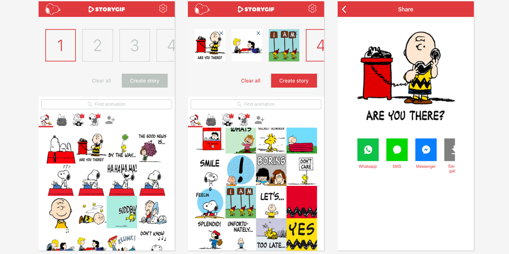
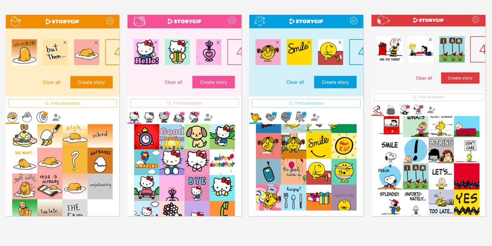
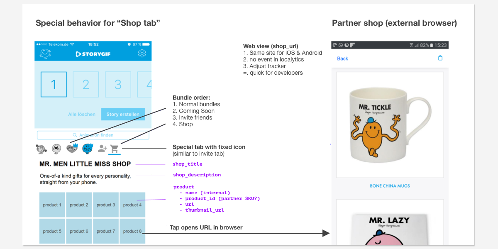

social startupservice designlean startupUI designsketchinvisionproto.io
Since May 2017, I am part of the social startup “BloodLink” to improve blood availability worldwide, starting in Mumbai India. Working in CIID (Copenhagen) and Mumbai, I am responsible for design and product aspects.
BUILD - TEST - LEARN - REPEAT... the BloodLink team in India
Card sorting to map different stakeholder perspectives on the ecosystem
Interviewing a private blood bank
Researching existing processes, user context, artefacts and workarounds
Collecting and clustering the research to detect patterns and design opportunities
As part of the latest BloodLink pilot with our partnering Mumbai blood banks, I built and tested a chatbot that helps potential donors learn about blood donation and find a nearby blood bank.
Guided conversations for donor eligibilty and finding nearby blood banks
Service blueprint poster... work in progress
An early map of possible systems involved in service flow
With a small team from StartupGuide Worldwide, we developed concepts for a digital platform that helps founders navigate their city’s startup ecosystem.
Each StartupGuide guide is dedicated to the startup scene of one city
Clustering initial research questions and results
Early mockups and testing value proposition with paper prototypes
product managementmobile appsmessagingbrandsproto.ioafter effectsiMessagelocalizationiOS/Google Play ASO
Lead the Zoobe design and development teams to build a brand-focussed, story-telling feature as iMessage and stand-alone app. Following our whitelabel strategy and working with several brand partners, the team achieved weekly (!) releases of new apps for famous brand characters such as Hello Kitty, Peanuts, Mr. Men Little Miss, Gudetama, and others.
Due to the novel concept and strong brands, the iMessage integration was featured by Apple as part of their iOS 10 promotions in several AppStores.

StoryGIF lets you combine animations of brand characters into a single GIF, creating a story.

White label apps with popular licenses: Gudetama, Hello Kitty, Little Men, Peanuts, ...

Spec discussion document for white label content and cross-promotion
UXproduct managementmobile appsmessagingbrandssketchproto.iotrellogithubmobile deviOS/Google Play ASO
Head of product and UX for Zoobe design for over 4 years. Built a small UX team and lead the product through several pivots and major design iterations.
Evolution of the app: "ZoobeCam" (2011), Viber integration, Zoobe platform
The Zoobe platform included video creation, posting, profiles and messaging
Cross-company feature workshops
UI development from sketch to final design
Remote and guerrilla testing via usertesting.com and Starbucks...